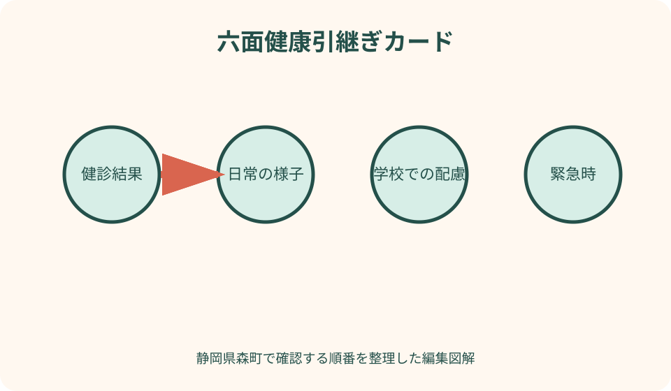
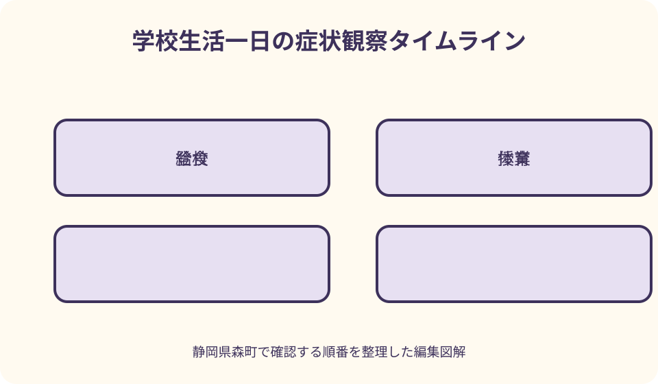

学校・就学・家庭記録｜最終確認 2026-08-10
静岡県森町で入学前に健康情報を学校へ伝える｜健診・薬・緊急時の整理
就学時健康診断の結果を提出すれば、学校生活で必要な情報がすべて伝わるとは限りません。健診記録は一時点の健康状態、日常の配慮は授業や給食で困りやすい場面、緊急時情報は症状と連絡順、薬は保管と使用条件という別の役割があります。森町の案内と文部科学省の一次情報を手掛かりに、学校との面談で確認できる形へ整えます。

編集イラスト結論：健康情報を六つの箱に分ける
一枚目に置く箱は、就学時健康診断、現在の受診状況、日常生活の配慮、緊急時の兆候と連絡、薬、情報共有の範囲です。診断名を一欄に並べるだけでは、学校がどの場面で何を確認すればよいか伝わりません。
書類を作る目的は、家庭が学校の対応を一方的に決めることでも、学校から確約を得ることでもありません。保護者が知る日常、主治医の指示、学校で可能な体制を面談で突き合わせるための土台にします。
体調や治療内容は入学までに変わることがあります。作成日、医療機関へ確認した日、学校と話した日を別々に記し、古い情報を最新として使わない仕組みを作ります。
呼吸が苦しい、意識がおかしいなど緊急性がある場面では、この記事や家庭メモを読み直すことを優先しません。学校の緊急時手順と医療・救急の判断に従う前提で準備します。
森町の就学時健康診断と入学案内を確認する
森町公式の入学案内では、小学校入学予定の子どもを対象に、就学時健康診断を十月または十一月に行うと説明されています。実施日、会場、持ち物は届いた通知を基準に確認します。
就学時健康診断は、入学後の日常対応を家庭だけで決める場ではありません。文部科学省は、教育委員会が就学予定者の心身の状況を把握し、保健上必要な助言などを行う目的を示しています。
健診当日に配慮してほしいことがあれば、会場で初めて伝えるのではなく、通知に記載された連絡先へ事前相談できるか尋ねます。移動、待機、検査方法、付き添いに関する心配を具体的に伝えます。
健診後に受診や確認を勧められた場合は、結果通知、受診日、医療機関からの説明、学校へ戻す必要がある書類を一組で保管します。受診結果を家庭の言葉だけで要約せず、提出形式を学校へ確認します。
相談先は教育委員会と入学予定校で役割を分ける
入学通知、就学時健康診断、就学先に関する入口は森町学校教育課です。森町公式の学校一覧で学校名と所在地を確認し、個別の健康情報をどこへ、いつ、どの方法で提出するかを尋ねます。
学校との面談では、授業、給食、体育、校外活動、登下校、保健室利用など日常の場面を相談します。教育委員会への相談と、入学予定校での具体的確認を一回の電話で完結させようとしません。
放課後児童クラブを利用する場合は、学校への提出だけで情報共有が完了するとは考えず、運営側の調査票や面談を別に確認します。森町の児童クラブ調査票にも健康上の留意点や食物アレルギーの欄があります。
複数の場へ同じ情報を出す場合でも、提出先ごとに必要範囲と更新方法を確認します。学校へ伝えた薬の内容が、児童クラブへ自動的に伝わると仮定しないことが重要です。
入学前健診記録は結果と次の行動を結ぶ
健診記録には、検査項目を家庭で評価し直すのではなく、受けた日、結果通知日、再確認を勧められた項目、次の受診先、学校へ提出する物を書きます。空欄は「異常なし」と読み替えません。
視力や聴力など学校生活へ関わる結果が出た場合は、座席や教材について家庭が先に指定せず、医療機関の説明と本人の困り方を学校へ伝えます。必要な配慮は面談で検討します。
既往歴は病名の一覧だけでなく、最後に症状が出た時期、現在の通院、医師から学校生活について受けた説明の有無を分けます。不確かな記憶は母子健康手帳や受診記録で確かめます。
健診後に状況が変わった場合は、古い結果通知に書き足すだけでなく、変更日と新しい確認先を別紙へ記します。入学直前に情報が更新されたことを学校へどう連絡するかも決めます。
診断名と日常の困り方を別欄にする
同じ診断名でも、学校で困る場面や必要な助けは一人ずつ違います。「ぜんそく」だけで終えず、どのような活動や環境で症状が出たことがあるか、本人が予兆をどう表すかを書きます。
反対に、診断名が未確定でも、光や音で疲れやすい、長く座ると痛む、トイレを急ぐなど日常の事実は伝えられます。家庭で病名を推測せず、観察日と具体的な場面を示します。
本人が自分でできること、声をかければできること、大人の助けが必要なことを三段階に分けます。すべてを「要配慮」とまとめるより、学校側が場面を想像しやすくなります。
できないことだけでなく、落ち着く説明の仕方、休むと回復しやすい時間、家庭で役立っている工夫も記します。ただし家庭の方法が学校でも必ず採用されるとは限らず、実施可能性を相談します。
日常配慮は学校生活の時間割で考える
登校から朝の会、授業、休み時間、給食、清掃、体育、下校までを横に並べ、症状や困りごとが起きやすい場面へ印を付けます。診察室では見えにくい学校生活の条件を整理できます。
体育では運動の種類、気温、屋内外、休憩で違いが出るかを書きます。「体育不可」「全部参加」の二択を家庭で決めず、主治医へ確認すべき内容と学校で相談する内容を分けます。
トイレ、水分、休憩、着替えなどは、本人が申し出られるか、周囲に知られず相談できる方法が必要かを考えます。本人の希望を聞かずに大人だけで共有範囲を広げません。
校外学習や宿泊行事は普段と食事、移動、医療への距離が変わります。入学時の面談ですべてを決め切らず、行事の案内時に再確認する項目として記録します。

食物アレルギーは診断と学校手順を照合する
文部科学省は、学校での取組を希望する保護者に学校生活管理指導表の提出を求め、学校が提出された表などに基づいて保護者と協議する考え方を示しています。家庭メモだけで対応を確定しません。
除去が必要な食品、接触や吸入での反応歴、これまでの症状、処方薬は、主治医が確認する書類と保護者の観察を区別します。自己判断で除去品目を追加した一覧を学校へ決定事項として渡しません。
給食だけでなく、調理実習、行事、教材、校外活動、友人との食品交換も確認場面です。どの場面で何を避け、本人がどう伝えるかを学校との面談で具体化します。
学校の対応内容は、人員、設備、献立、本人の状況などを踏まえて協議されます。この記事は除去食の提供や事故が起きないことを保証せず、最新の学校案内と医師の指示を確認するために使います。
緊急時情報は症状・行動・連絡の順にする
緊急時欄の最初には、いつもと違う様子を具体的に書きます。顔色、呼吸、意識、発疹、痛み、本人が使う言葉など、観察できる事実と診断名を別々にします。
次に、主治医から受けた指示や学校へ提出する書面を置きます。保護者がインターネットで見つけた対処を追加せず、学校の緊急時手順とどのように合わせるかを面談で確認します。
連絡順には、第一連絡先、つながらない場合、勤務先、医療機関を記します。電話番号だけでなく、平日昼に実際につながる人、迎えに行ける人を区別します。
救急要請が必要な状態で、保護者への連絡がつくまで対応を待つ、と家庭側が決めることはできません。学校が緊急時にどのように判断・連絡するかを事前に尋ね、理解の違いを残さないようにします。
薬は名称だけでなく学校での扱いを確認する
薬の一覧には、正式名称、目的、用量、使用時刻、保管条件、有効期限、処方した医療機関、指示書の有無を書きます。見た目や「白い薬」といった呼び方に頼りません。
本人が携帯するのか、学校が預かるのか、保健室などに置くのかは、家庭が一方的に決めず学校の規程を確認します。冷所保管や使用前の確認が必要なら、実行可能な方法を相談します。
頓服薬は「具合が悪いとき」と曖昧にせず、医師から示された使用条件を学校へ伝える書面を確認します。教職員による使用や補助の範囲についても、学校から正式な説明を受けます。
薬をランドセルへ入れたままにする場合、紛失、誤使用、高温、期限切れが起き得ます。毎月の家庭確認日、交換時の受渡し、使用後の報告方法を決めます。
アドレナリン自己注射薬などの確認を曖昧にしない
文部科学省の資料は、アドレナリン自己注射薬の処方を受ける児童生徒について、教職員が一般的知識と本人の情報を共有しておく必要性を示しています。提出書類と学校の説明を確認します。
保管場所、携帯方法、期限確認、本人が使える状況、周囲の援助、救急要請、保護者連絡を一つずつ面談で扱います。「学校へ渡したから完了」とはせず、担当が変わる場合の共有も尋ねます。
使い方は処方時の医療機関や公的な研修資料で確認し、この記事の文章を操作手順として使いません。練習器具の持参が可能か、学校側がどの研修を行うかも学校へ確認します。
薬の使用をためらわないようにしたいという希望と、個別状態に対する医療判断は別です。主治医へ尋ねる質問、学校へ尋ねる質問、緊急時に行うことを三列に分けます。
個人情報は共有目的と相手を面談で確認する
健康情報は、詳しければ詳しいほどよいとは限りません。学校生活で必要な目的、閲覧する職員、緊急時の共有、保管場所、更新・返却方法を学校へ尋ねます。
文部科学省のアレルギー対応資料は、管理指導表の個人情報に留意する一方、緊急時に教職員が閲覧できる管理の必要性も示しています。秘密保持と必要な共有を二者択一にしません。
本人には、何を誰へ伝えるのかを年齢に合う言葉で説明します。友人へ知らせたいこと、知られたくないことも聞きますが、生命に関わる緊急情報の扱いは学校と保護者で丁寧に確認します。
家族用の共有ファイルへ診断書、保険情報、薬の写真を無制限に入れません。原本の保管者、学校提出用、緊急携帯用を分け、不要になった写しの処分方法も決めます。
学校面談は質問表を先に送る
面談を依頼するときは、子どもの氏名、入学予定、相談したい大分類、希望時期を伝えます。電話口で詳細な診療情報をすべて話す前に、学校が指定する提出方法を確認します。
質問表は「授業」「給食」「体育」「緊急時」「薬」「共有範囲」の六行にします。学校から回答を得たい項目と、主治医へ確認中の項目を色分けします。
参加者は、学校側の担当、保護者、必要に応じ本人や支援者などを学校と相談します。多人数へ広げることを当然とせず、目的に必要な範囲を確認します。
面談の終わりには、決まったこと、未決定、追加書類、次回日、入学初日の暫定対応を読み合わせます。保護者が期待した内容と学校の回答を同じ欄へ混ぜません。
主治医へ学校生活の場面で質問する
受診時は「学校へ何を伝えればよいですか」だけでなく、運動、給食、校外活動、長時間の座位、屋外活動など具体的な場面を示します。学校から受け取った書式があれば持参します。
薬については、学校時間中に必要になる可能性、使用条件、保管、期限、自己管理の可否を尋ねます。保護者の判断で処方内容を書き換えず、必要な証明や指示書の形式を確認します。
症状が変化した場合に、学校へ即日伝えること、次回受診まで待てること、救急相談が必要なことを区別して質問します。個別の緊急判断は医療者の説明に従います。
医療機関が学校へ直接連絡するとは限りません。保護者が持ち帰る書類、学校から医療機関へ問い合わせる際の同意、更新頻度を確認します。

健康情報を早く整理する良い点
良い点は、就学時健康診断の結果と、家庭が日々観察する困りごとを混ぜずに伝えられることです。誰が確認した情報かが分かり、学校と主治医への質問が具体的になります。
入学直前の短い説明だけに頼らず、面談、追加書類、薬の準備に時間を取れます。未確定事項を早く見つけること自体が、無理な即決を避ける助けになります。
緊急連絡先と迎えに行ける人を実態に合わせて確認でき、保護者一人の電話だけに依存しない連絡表を作れます。勤務や移動時間も含めて家族の役割を話せます。
本人の言葉を記録へ入れることで、大人が配慮内容を決めるだけの準備になりません。困ったときの伝え方や保健室へ相談する方法を、入学前から練習できます。
健康情報の案内へ注文したい点
注文したい点は、就学時健康診断、学校の保健調査、給食のアレルギー対応、薬の扱いが別々の書類になることがあり、初めての家庭には全体像が見えにくいことです。
公式ページに一般的な日程があっても、個別の提出期限、面談担当、書式の最新版までは分からない場合があります。ウェブに記載がない事項を不要とも不可とも判断せず学校へ尋ねます。
同じ健康情報を複数回書く負担があっても、提出先ごとに目的が違う可能性があります。前回の写しだけを渡す前に、更新日と不足欄を確認します。
学校の対応を事前に完全保証する表現は避ける必要があります。一方で、曖昧なまま入学日を迎えず、保護者が質問できる窓口、回答日、再確認時期を示す案内が望まれます。
代案・結論：書類が間に合わないときは未確定を共有する
主治医の予約や書類発行が入学前に間に合わない場合は、家庭の推測で欄を埋めず、取得予定日と現時点で確認できたことを学校へ伝えます。暫定的に必要な相談を尋ねます。
面談日に全項目が決まらなくても、未決定の理由、確認先、担当、次回日を残せれば前進です。学校側の検討が必要な事項を、保護者がその場で回答するよう求めません。
本人が面談で話すことに負担を感じる場合は、同席方法、事前メモ、別室、短時間化など相談可能な方法を学校へ尋ねます。本人不在で全て決めることも当然とはしません。
結論として、完璧な健康ファイルを作るより、情報の出所、更新日、学校での場面、次の確認先が分かる記録を作る方が実用的です。
大石の視点：住まい選びでも医療と学校の距離を分ける
住まい探しでは「学校が近い」「病院が近い」という距離だけが目に入りがちです。しかし通院頻度、移動手段、学校からの迎え、家族の勤務先によって、実際の負担は変わります。
私は、健康上の配慮がある家庭ほど、学校名や医療機関名を物件広告だけで判断せず、学校の相談窓口と通院の移動時間を別々に確認することを勧めます。
不動産会社は、学校での薬の管理、給食対応、医療上の判断を確約できません。契約前に重要な条件があるなら、教育委員会、学校、主治医からそれぞれ確認した日を比較表へ残します。
森町内でも町なかと山間部では移動時間が異なります。緊急時の迎えを一人の保護者だけに頼らず、連絡を受ける人と実際に動ける人を分けて考えることが暮らしの備えになります。
記事固有の六面健康引継ぎカード
カード一面目は健診結果と次の受診、二面目は日常の困り方、三面目は授業や給食での配慮、四面目は緊急時、五面目は薬、六面目は共有範囲にします。
各面に、保護者の観察、医師の指示、学校の回答という三列を作ります。同じ文章を三列へ複写せず、情報を確認した人が分かるようにします。
日付欄は作成日、医療確認日、学校面談日、次回更新日に分けます。年度替わり、薬の変更、症状の変化があれば新しい版を作り、旧版には終了日を付けます。
緊急携帯版は必要最小限にし、詳細記録の保管場所だけを示します。紛失時の影響を考え、個人番号や無関係な家族の診療情報は載せません。
入学後一か月で面談内容を見直す
入学前に想定した困り方と、実際の学校生活は一致しないことがあります。一週間、一か月など学校と決めた時期に、本人の様子、欠席、保健室利用、給食、体育を振り返ります。
うまくいった配慮は、何が役立ったかを具体的に残します。「問題なし」で閉じず、環境や担当が変わっても引き継げる言葉にします。
うまくいかなかった場合も、本人や教職員の責任とすぐに決めず、場面、時刻、症状、直前の活動、行った対応を分けて記録し、再相談します。
薬の残数、有効期限、緊急連絡先、医療機関の予定も確認します。行事や長期休業の前には、通常日と違う条件を学校へ尋ねます。
面談で使える短い伝え方
学校には「入学予定の子どもの健康情報について、健診結果、日常の配慮、緊急時、薬を分けて相談したいです。学校指定の書類と面談時期を教えてください」と伝えます。
日常配慮は「病名は○○です」だけでなく、「長く走った後にせきが出たことがあり、本人は胸が苦しいと表現します。主治医へ学校での運動条件を確認中です」と出所を添えます。
薬は「持たせます」と決定せず、「処方薬が学校時間中に必要になる可能性があります。医師の指示書、保管、本人携帯、使用後連絡の手順を確認したいです」と尋ねます。
共有範囲は「秘密にしてください」だけでなく、「緊急時に必要な職員へ伝える範囲と、平常時の保管・閲覧方法を説明してください」と目的に沿って確認します。
まとめ：診断名より学校生活の場面へつなぐ
静岡県森町で入学前の健康情報を引き継ぐときは、就学時健康診断の結果、日常の配慮、緊急時、薬、個人情報を別々に整理し、学校教育課と入学予定校へ確認します。
食物アレルギーなど学校での管理が必要な場合は、学校生活管理指導表など指定書類の要否を確認し、主治医と学校の情報を家庭の自己判断で置き換えません。
面談では、決定、未決定、追加資料、次回日、入学初日の暫定対応を読み合わせます。学校の対応や緊急時の結果を保証するのではなく、更新可能な合意を作ります。
今日できる一歩は、健診結果と薬の一覧を探し、学校で困りやすい場面を三つ書くことです。その紙を手元に学校へ連絡し、指定書類と面談時期を確認してください。
公式情報・確認先
掲載内容は次の一次情報を基礎に整理しました。営業、料金、催し、交通は変わるため、出発前または手続き前にリンク先で最新情報を確認してください。
- 入学（静岡県森町、2026-08-10確認）
- 学校教育課（静岡県森町、2026-08-10確認）
- 森町の小・中学校一覧（静岡県森町、2026-08-10確認）
- 令和8年度 森町放課後児童クラブ調査票（静岡県森町、2026-08-10確認）
- 就学時の健康診断の概要（文部科学省、2026-08-10確認）
- アレルギー疾患対応（文部科学省、2026-08-10確認）
- 学校給食における食物アレルギー等を有する児童生徒等への対応等について（文部科学省、2026-08-10確認）
- 学校のアレルギー疾患に対する取り組みガイドライン要約版（文部科学省、2026-08-10確認）